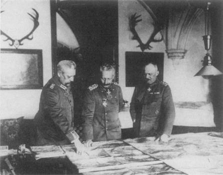

Paul von Hindenburg, eski imparator II Wilhelm ve Ench Ludendorff, 1917
Birinci Dünya Savaşı’nın çıkışının insanı hayrete düşüren tarafı, şimdiye kadar üstesinden gelinmiş birçok krizden daha basit bir kriz olmasına rağmen, küresel bir felaketi ateşlemiş olması değil, bu işin bu kadar uzun sürmüş olmasıdır. 1914’te, bir tarafta Almanya ve Avusturya-Macaristan ile öbür tarafta Üçlü İtilaf arasındaki mücadele çok tehlikeli boyutlara varmıştı. Bütün belli başlı ülkelerin devlet adamları, birbiri ardından gelen krizlerin çözülmesini gittikçe daha da zorlaştıran bir diplomatik kıyamet günü makinesinin inşasına yardımcı olmuşlardır. Askeri liderler ise, karar verme için mevcut zamanı stratejik planlar eklemek suretiyle daraltarak bu tehlikeye büyük ölçüde katkıda bulundular. Askeri planlar sürate dayandığından ve diplomasi mekanizması ise, geleneksel olarak ağır işlediğinden, zaman baskısı altında krizi önlemek olanaksız hale gelmişti, işi daha da kötü yapan nokta, askeri planlamacıların, hazırladıkları planların etkilerini politikadaki çalışma arkadaşlarına yeteri ölçüde açıklamamış olmalarıdır.
Askeri planlama, özerk hale gelmişti. Bu yönde ilk adım, 1892’de Fransız-Rus askeri anlaşması için yapılan görüşmeler sırasında atıldı. O zamana kadar ittifak görüşmeleri, casus belli (savaş nedeni) veya düşman tarafından yapılan hangi belirli eylemlerin müttefikleri savaşa girmeye zorlayacağı üzerinde yapılmıştı. Hemen hemen değişmez bir şekilde tanım, kimin ilk hareketi yaptığı ile aynıydı.
Mayıs 1892’de, Rus görüşmeci General Nikolai Obruçev, Dışişleri Bakanı Giers’e casus belli’yi tanımlamak için kullanılan geleneksel metodun yerini nasıl modern teknolojiye bıraktığını açıklayan bir mektup gönderdi. Obruçev’e göre, önemli olan kimin önce seferber olduğuydu, kimin ilk ateşi açtığı değildi: “Seferberlik hareketine başlanılması, artık barışçı bir hareket sayılamaz; tam tersine en kesin savaş hareketidir.”{257}
Seferberliği ağırdan alan taraf, ittifaklarından faydalanamaz ve düşmanına, her bir düşmanını tek tek yenme olanağı sağlar. Bütün müttefiklerin aynı anda seferber olması, Avrupa liderlerinin aklında o kadar önemli bir hareket halini aldı ki, ciddi diplomatik yükümlülüklerin anahtarı haline dönüştü, ittifakların amacı, artık savaş fiilen başladıktan sonra destek güvencesi sağlamak değil, fakat her müttefikin mümkün olan en erken, mümkünse düşmandan hemen önce seferber olma güvencesi vermekti. Bu şekilde kurulan ittifaklar birbirleriyle çatıştığı zaman, seferberliğe dayalı tehditler artık geri çevrilemezdi; çünkü işin ortasında seferberliği durdurmak, hiç başlatmamış olmaktan daha tehlikeliydi. Diğer taraf devam ederken bir tarafın durması, o taraf için her geçen gün artan bir dezavantaj oluştururdu. Her iki taraf da aynı anda durmaya çalışırsa da, bu teknik bakımdan o kadar zordur ki, hemen hemen kesin olarak diplomatlar daha seferberliği nasıl durduracakları hususunda anlaşmaya varmadan önce seferberlik tamamlanmış olur.
Bu kıyamet günü süreci, casus belli’yi etkili bir şekilde politik kontrolden çıkardı. Her kriz, seferberlik kararı şeklinde, bir savaşa doğru hızlanma mekanizması taşıyordu ve her savaşın genel bir savaş olacağı da kesindi.
Savaşın otomatik olarak hızlanması olasılığına taraftar olmamak bir yana, Obruçev bunu sevinçle karşıladı. En son istediği şey, bölgesel bir anlaşmazlıktı. Çünkü Almanya, Rusya ile Avusturya arasındaki bir savaşın dışında kalırsa, hemen savaştan sonra barış şartlarını dikte edecek bir konumda ortaya çıkardı. Obruçev’in fantezisine göre, Bismarck’ın Berlin Kongresi’nde yaptığı da buydu:
“Bizim diplomasimiz, başka hiçbir diplomasinin olmadığı kadar, Rusya’nın, örneğin sadece Almanya veya Avusturya yahut Türkiye ile izole edilmiş bir çatışmaya girmesine dayanır. Bu bağlamda Berlin Kongresi, bizim için yeterli bir ders olmuştur ve bize, kime en tehlikeli düşmanımız olarak bakmamız gerektiğini öğretmiştir: Bizimle doğrudan doğruya savaşan mı, yoksa zayıflamamızı bekleyip sonra barış şartlarını dikte eden mi?...”{258}
Obruçev’e göre, her savaşın bir genel savaşa dönüşmesi, Rusya’nın çıkarmadır. Fransa’yla iyi kurulmuş bir ittifakın Rusya için faydası, bölgesel bir savaşı önleme olasılığıdır:
“Her Avrupa savaşının başlangıcında, anlaşmadığı lokalize etmek ve etkisini mümkün olduğu kadar sınırlamak için diplomatlar büyük çaba gösterirler. Fakat Avrupa’nın şimdiki silahlanmış ve düzeni altüst olmuş durumunda, Rusya, savaşın herhangi bir şekilde lokalize edilmesi çabasına kuşku ile bakmalıdır. Çünkü bu durum, yalnızca tereddüt eden ve ortaya çıkmayan düşmanlarımız için değil, aynı zamanda kararsız müttefiklerimiz için de olasılıkları artırır.”{259}
Başka bir deyişle, sınırlı amaçlar için yapılan bir savunma savaşı, Rusya’nın ulusal çıkarlarına karşıydı. Her savaş toptan bir savaş olmalıydı; askeri planlamacılar, politik liderlere başka seçenek tanımamalıydı:
“Bir savaşın içine çekildik mi, artık savaşı bütün kuvvetlerimizle götürmekten ve her iki komşumuzla birden savaşmaktan başka yol yoktur. Bütün silahlanmış kitlelerin savaşa girmek için hazır olması karşısında, en belirleyici nitelikteki bir savaştan başka çeşit bir savaş düşünülemez. Öyle bir savaş ki, uzun bir zaman için Avrupa devletlerinin ve özellikle Rusya ve Almanya’nın gelecekteki göreceli politik pozisyonlarını belirlesin.”{260}
Savaş sebebi ne kadar önemsiz olursa olsun savaş toptan olmalıdır, başlangıcı bir komşuyu içeriyorsa, Rusya diğerinin de savaşın içine çekilmesi için elinden geleni yapmalıdır. Hayret edilebilecek bir şekilde, Rus Genelkurmayı, biriyle savaşmak yerine, hem Almanya ve hem de Avusturya-Macaristan’la aynı zamanda savaşmayı yeğlemekteydi. Obruçev’in fikirlerini taşıyan bir askeri antlaşma, 4 Ocak 1894’te imzalanmıştır. Fransa ve Rusya, Üçlü İttifak’ını herhangi bir üyesinin hangi nedenle olursa olsun seferber olması halinde, kendileri seferber olmak için anlaştılar. Kıyamet günü makinası tamamlanmıştı. Almanya’nın müttefiki İtalya, Savoy yüzünden Fransa’ya karşı seferber olur ise, Rusya da Almanya’ya karşı seferber olmak zorunda kalacaktı; Avusturya, Sırbistan’a karşı seferber olursa, Fransa Almanya’ya karşı seferber olmak zorundaydı. Bir noktada, herhangi bir devletin, herhangi bir nedenle seferber olacağı kesin olduğuna göre, genel bir savaşın patlaması, ancak bir zaman meselesi oluyordu; çünkü sadece bir büyük devletin seferber olması, tümü için kıyamet günü makinasını harekete geçirmeye yetiyordu.
Çar III. Aleksandr oynanmakta olan bahislerin çok yüksek olduğunu anladı. Giers ona, “…Fransızların, Almanya’yı yok etmesine yardımımızdan dolayı bizim kazancımız ne olacak?” diye sorduğunda şöyle cevap verdi: “Kazancımız, şimdiki şekliyle Almanya’nın ortadan kaybolmasıdır. Onun yerine, eskiden olduğu gibi, küçük, zayıf devletler ortaya çıkacaktır.”{261} Alman savaş nedenleri de aynı şekilde büyük ve sınırsızdı. Çok güvenilen Avrupa dengesi, ölümüne bir savaşa dönüşmüştü; fakat hiç bir ilgili devlet adamı, böyle bir nihilizmi haklı gösterecek herhangi bir neden gösteremezdi veya böyle bir yargının hangi politik amaca hizmet ettiğini açıklayamazdı.
Rus plancıların bir teori olarak ileri sürdükleri bu noktayı Obruçev, Fransız-Rus askeri ittifakını görüşmekteyken, Alman Genelkurmayı, bir hareket planına dönüştürmüştü bile. İmparatorluk generalleri, Alman titizliği ile seferberlik düşüncesini en uç noktasına kadar götürdüler. Alman Genelkurmay Başkanı Alfred von Schlieffen de Rus ve Fransız meslektaşları kadar seferberlik programlarına tutku şeklinde bağlı idi. Fakat Fransız ve Rus liderleri seferberlik zorunluluğunu tanımlamakla ilgilenirlerken, Schlieffen bütün dikkatini bu kavramın uygulanması üzerine odaklaştırdı.
Politik çevrenin kaprislerine bir şey bırakmayı reddeden Schlieffen, Almanya’yı etrafının çevrilmiş olmasından kurtaracak kusursuz bir plan yaratmaya çabaladı. Bismarck’ın yerine gelenlerin, onun karmaşık diplomasisini terk etmeleri gibi, Schlieffen de 1864-70 arasında Bismarck’ın üç hızlı zaferinin mimarı Helmuth von Moltke’nin stratejik kavramlarını fırlatıp attı.
Moltke, Bismarck’ın kâbusu olan düşman koalisyonlara politik bir çözüm bulunması seçeneğini açık tutan bir strateji geliştirmişti. İki cepheli bir savaş olduğunda, Moltke Alman ordusunu, Doğu ve Batı arasında aşağı yukarı eşit şekilde bölmeyi ve her iki cephede de savunma savaşı vermeyi planlamıştı. Fransa’nın başlıca hedefi Alsace-Lorraine’i yeniden ele geçirmek olduğundan onun saldıracağı kesindi. Eğer Almanya bu saldırıyı püskürtürse, Fransa, bir uzlaşma barışı istemeye zorunlu olabilirdi. Fransa-Prusya Savaşı’nda, düşman başşehri kuşatma altında tuttuğu müddetçe, barış yapmanın zorluğunu öğrenmiş olan Moltke, özellikle askeri harekâtları Paris’e doğru genişletmeye karşı uyarıda bulundu.
Moltke, Doğu cephesi için de aynı stratejiyi önerdi: Yani Rus saldırısını püskürtmek ve Rus ordusunu stratejik bağlamdan yeterli bir uzaklığa kadar sürmek ve sonra bir uzlaşma barışı önermek. Önce hangi cephede zafer kazanılırsa, diğer cephedeki ordulara yardım edilecekti. Böylece, savaşın büyüklüğü, fedakârlıklar ve politik çözüm, bir nevi denge içinde tutulacaktı.{262}
Fakat Bismarck’ın yerine gelenlerin birbiri ile çakışan ittifakların belirsizliğinden rahatsız olmaları gibi, Schlieffen de Moltke’nin planını, askeri inisiyatifi Almanya’nın düşmanlarını bıraktığı gerekçesiyle reddetti. Schlieffen, Moltke’nin kesin zafer yerine politik uzlaşmayı yeğlemesini de onaylamıyordu. Gerçekte kayıtsız şartsız teslim anlamına gelen şartların empoze edilmesinden yana olan Schlieffen, bir cephede çabuk ve kesin zafer kazandıracak ve sonra bütün Alman kuvvetlerini diğer düşman üzerine yöneltecek, böylece iki cephede de kesin bir sonuç sağlayacak bir plan hazırladı. Doğu’da o cepheyi dışarıda bırakacak çabuk bir darbe, Rusya’nın en az altı hafta süren seferberliğinin yavaşlığı nedeniyle olasılık dışı kalınca, Schlieffen Rus ordusu tam olarak seferber olana kadar ilk önce Fransız ordusunu yok etmeğe karar verdi. Alman sınırlarındaki ağır Fransız tahkimatını atlamak için, Belçika’nın tarafsızlığını çiğneyerek Alman ordularını Belçika toprakları üzerinden geçirmek fikrini uygun buldu. Paris’i alıp Fransız ordusunu sınır boyunca kendi tahkimatı içinde arkadan kuşatmış olacaktı. Bu esnada, Almanya Doğu’da savunmada kalacaktı.
Bu plan, parlak olduğu kadar da pervasız bir plandı. En az tarih bilgisi, Büyük Britanya’nın Belçika işgal edilirse kesinlikle savaşa gireceğini göstermeliydi. Oysa bu gerçek Kaiser ve Alman Genelkurmayının gözünden tamamen kaçmış görünüyordu. 1892’de Schlieffen Planı’nın hazırlanmasından yirmi yıl sonra, Alman liderler bir Avrupa savaşında desteğini kazanmak veya hiç değilse tarafsız olması için İngiltere’ye sayısız önerilerde bulundular. Ancak bunların hepsi Alman askeri planlamacıları tarafından boşa çıkarılıyordu. Büyük Britanya, Benelux Ülkeleri’nin bağımsızlığı için savaştığı kadar, devamlı olarak ve amansızca hiçbir ülke için savaşmamıştı; Büyük Britanya’nın XIV. Louis ve Napoleon’a karşı yaptığı savaşlardaki azimkâr hareket tarzı, bunun tanığı idi. Bir kez savaşa girdi mi, Fransa yenilse bile sonuna kadar savaşa devam edebilirdi. Schlieffen Planı ise, başarısızlık olasılığını hiç içermiyordu. Almanya, Fransız ordusunu yok edemezse –ki bu olası idi– ne olacaktı? Fransızların iç hatları ve Paris’ten bütün ülkeye yayılan demiryolları vardı; Alman ordusu harap olmuş bir ülke içinde yürüyerek ilerlemek zorunda olacaktı. Belçika’yı işgal etmekle bir politik uzlaşma barışı olasılığını ortadan kaldırdıktan sonra, Almanya, her iki cephede de Moltke’nin savunma stratejisine dönmek zorunda kalacaktı. Bismarck’ın dış politikasının başlıca amacı, iki cephede savaştan kaçınmak ve Moltke’nin askeri stratejisi ise, savaşı sınırlamak iken, Schlieffen her şeyi ortaya koyarak sürdürülen bir iki cepheli savaşta ısrar ediyordu.
En olası anlaşmazlık kaynağı Doğu Avrupa’da iken Alman askeri tahkimatının Fransa üzerinde odaklanması sonucu, Bismarck’ın uykularını kaçıran “iki cepheli savaş olursa ne yapacağız?” sorusu, Schlieffen’in uykularını kaçıran “iki cepheli savaş olmazsa ne yaparız?” sorusuna dönüştü. Fransa, bir Balkan savaşında tarafsızlığını ilan ederse, Avrupa’yı bölen çizginin diğer tarafından olan Obruçev’in çoktan açıkladığı üzere, Almanya, Rus seferberliği tamamlandıktan sonra, bir Fransız savaş ilanı tehlikesi ile karşı karşıya kalabilirdi. Diğer taraftan ise, eğer Almanya, Fransa’nın, tarafsızlık önerisini görmemezlikten gelirse, Schlieffen planı Almanya’yı savaşan durumunda olmayan bir Fransa elde etmek için, savaşan durumunda olmayan Belçika’ya saldırmak gibi rahatsızlık veren bir duruma sokacaktı. Bu nedenle Schlieffen’in, Fransa kenarda kalırsa, Fransa’ya saldırmak için bir neden icat etmesi gerekiyordu. Böylece Schlieffen, Almanya’nın Fransa’yı tarafsız kabul etmesi için yerine getirilmesi mümkün olmayan bir kriter yarattı. Almanya, Fransa’nın önemli kalelerinden birini Almanya’ya bırakması halinde, diğer bir deyişle, ancak Fransa kendisini Almanya’nın insafına terk ederse ve Büyük Devlet olma pozisyonundan vazgeçerse, Fransa’yı tarafsız olarak kabul edecekti.
Genel politik ittifakların kötü karışımı ve tabancanın tetiği gibi hassas askeri stratejiler, çok kan dökülmesini kaçınılmaz hale getirdi. Güç dengesinin, XVIII ve XIX. yüzyıllardaki esnekliğinden eser bile kalmadı. Savaş nerede patlarsa patlasın (ki Balkanlar’da olacağı hemen hemen kesindi), Schlieffen planı, bu savaşın ilk çatışmalarının Batı’da, bu ilk krizden çıkarları etkilenmeyen ülkeler arasında olmasını öngörmüştü. Dış politika, şimdi her şeyin tek bir zar atışına bağlı olduğu bir askeri stratejiye boyun eğmişti. Savaşa daha düşüncesizce ve daha teknokratik bir yaklaşım tahayyül etmek zordu.
Her ne kadar her iki tarafın da askeri liderleri savaşın en tahrip edici cinsten olmasında ısrar ediyorlarsa da, uygulayacakları askeri teknoloji ışığında savaşın politik sonuçları hakkında garip bir sessizlik içinde idiler. Planladıkları ölçüde bir savaştan sonra Avrupa neye benzeyecekti? Hazırladıkları katliamdan, hangi değişiklik haklı çıkacaktı? Rusya’nın Almanya üzerinde veya Almanya’nın Rusya üzerinde değil bir genel savaşı, bölgesel bir savaşı dahi haklı gösterecek tek bir belirli isteği yoktu.
Her iki tarafın da diplomatları büyük ölçüde sessiz idiler; ülkelerinin zaman bombasının politik etkilerini anlayamadıklarından ve her ülkedeki milliyetçi politikalar onların askeri kurumlara karşı çıkmalarını önlediğinden, bu sessiz kalma yönündeki tertip, bütün büyük ülkelerde politik liderlerin askeri ve politik hedefler arasında bağlantıyı sağlayan askeri planlar talep etmelerine engel oldu.
Hazırlamakta oldukları felaketi düşününce, Avrupa liderlerin izledikleri felaket yolunda gösterdikleri kayıtsızlık ürkütücü idi. Ancak birkaç uyarma işitildi ki, bunlardan birisi eskiden Rusya içişleri bakanı olup, sonradan Devlet Konseyi üyesi olan Peter Durnovo’dan geldi. Savaştan altı ay önce, Şubat 1914’te Çar’a yazdığı memorandumda şöyle bir kehanette bulunuyordu:
“İngiltere’nin bir kıta savaşında önemli bir görev alma yeteneğinin olmaması ve insan gücü zayıf Fransa’nın, olasılıkla katı savunma taktiklerine başvuracağı gerçeği karşısında, askeri tekniğin bugünkü durumu göz önüne alındığı takdirde çok büyük kayıplar verileceği de düşünülürse, savaşın esas yükü kuşkusuz bizim üzerimizde olacaktır. Çok güçlü Alman savunmasında gedik açacak vuruş, bizim vuruşumuz olacaktır...”{263}
Durnovo’nun görüşüne göre, bu fedakârlıklar boşuna olacaktı; çünkü Rusya, geleneksel jeopolitik düşman İngiltere yanında savaşmakla, hiçbir sürekli toprak kazancı elde edemezdi. Büyük Britanya, Orta Avrupa’da Rusya’nın bazı kazançlarını kabul edebilirse de, Polonya’dan alınacak tek bir toprak parçası Rusya imparatorluğu içindeki şimdiden kuvvetli merkezkaç eğilimleri yalnızca büyültmekle kalacaktı. Bu toprakların nüfusunun Ukrayna nüfusuna eklenmesinin, bağımsız Ukrayna isteklerini tahrik edeceğini söylüyordu Durnovo. Böylece zafer, Çar’ın imparatorluğunu, küçük Rusya durumuna indirmeye yetecek kadar etnik huzursuzluk aşılamak gibi gülünç bir sonuç verecekti.
Rusya, yüzyıllık hayali olan Çanakkale Boğazı’nı alsa bile, Durnovo bu başarının stratejik bakımdan boş olacağını iddia ediyordu:
“Yine de bize açık denize bir çıkış sağlamayacaktır; çünkü diğer tarafta, hemen hemen hepsi karasularından oluşan, üzerine birçok ada serpiştirilmiş bir deniz vardır ki, örneğin İngiliz donanması, Boğazlar olsun ya da olmasın her giriş ve çıkışı bize kapatmakta hiçbir zorluk çekmez.”{264}
Bu basit jeopolitik gerçeğin nasıl olup da İstanbul’u fethetmek isteyen üç kuşak Rus’un ve onları önlemeye kararlı İngilizlerin gözünden kaçtığını anlamak bir sır olarak kalacaktır. Durnovo, bir savaşın Rusya’ya, daha da az ekonomik kazanç sağlayacağını da söylüyordu. Nereden bakılırsa bakılsın, maliyetinin, getirisinden fazla olacağı açıktı. Bir Alman zaferi Rus ekonomisini yok edeceği gibi, bir Rus zaferi de Alman ekonomisini kuruturdu ve hangi taraf kazanmış olursa olsun, tazminat için geride hiçbir şey bırakmayacaktı:
“Savaşın, Rusya’nın sınırlı mali olanaklarının ötesinde masraflar gerektireceği kesindir. Müttefik ve tarafsız ülkelerden kredi almamız gerekecektir; fakat bunlar karşılıksız olmayacaktır. Savaşın aleyhimize felaketle sonuçlanması halinde ne olacağını şimdi tartışmak istemiyorum. Yenilginin mali ve ekonomik sonuçları ise, ne hesaplanabilir, ne de şimdiden görülebilir; kuşkusuz bütün ulusal ekonomimizin toptan mahvına sebep olacaktır. Zafer bile, bize son derece aleyhte bir mali gelecek vaat etmektedir; tamamen mahvolmuş bir Almanya, savaş masraflarımız için bize ödemesi gereken tazminatı ödeyecek durumda olmayacaktır, İngiltere’nin çıkarı düşünülerek dikte edilmiş barış antlaşması, uzun vadede bile Almanya’ya bizim savaş masraflarımızı karşılayabilecek yeterli bir ekonomik toparlanma imkânı tanımayacaktır.”{265}
Durnovo’nun savaşa karşı olmasının en önemli nedeni, savaşın kaçınılmaz olarak sosyal devrime neden olacağı şeklindeki tahminidir ki, bu ilk önce yenilen ülkede olacak ve oradan da yenen ülkeye sıçrayacaktır:
“Bütün çağdaş yıkıcı eğilimlerinin hepsinin uzun ve dikkatli bir araştırmasına dayanan kesin inancımız odur ki, yenilen ülkede, doğası gereği sonradan savaştan zaferle çıkan ülkeye de yayılacak sosyal bir devrimin patlak vermesi kaçınılmazdır.”{266}
Çar’ın, belki de hanedanını kurtarabilecek bu memorandumu gördüğüne dair bilgi bulunmuyor. Diğer Avrupa başşehirlerinde buna benzer analizlerin yapıldığına dair de bir kayıt yoktur. Durnovo’nun görüşlerine en yakın görüşler, Almanya’yı savaşa götürecek olan Başbakan Bethmann-Hollweg’in nükteli birkaç sözüdür. 1913’te, vakit çoktan geçmişken, Alman dış politikasının Avrupa’nın geri kalan bölümü için niçin huzursuzluk verici olduğunu çok yerinde olarak şöyle belirtmişti:
“Herkese kafa tut, herkesin yolunu kes ve bu şekilde davranarak gerçekte kimseyi zayıflatmış olma. Sebep: amaçsızlık, küçük prestij merakı ve her çeşit popülist heves.”{267}
Aynı yıl, Bethman-Hollweg yirmi yıl önce uygulanmaya konsaydı ülkesini kurtaracak bir başka kural ortaya koydu:
“Rusya ve İngiltere’ye karşı ihtiyatlı bir politika izleyerek Fransa’yı kontrol altında tutmalıyız. Doğal olarak bu, bizim şovenistleri hoşnut etmeyecektir ve popüler de değildir. Fakat yakın gelecekte Almanya için başka alternatif görmüyorum. “{268}
Bu satırlar yazıldığı zaman, Avrupa çoktan girdaba doğru yönelmiş durumda idi. Birinci Dünya Savaşı’nı başlatan krizin yeri, Avrupa güç dengesi ile ilgisi olmayan bir yerdi ve casus belli, izlenen diplomasi ne kadar pervasızsa, o da o kadar rastlantı sonucuydu.
28 Haziran 1914’te, Habsburg tahtının varisi Franz Ferdinand, Avusturya’nın 1908’de Bosna-Hersek’i topraklarına katma cesaretinin bedelini hayatı ile ödedi. Suikastın yapılış tarzı bile, Avusturya’nın dağılmasına damgasını vuran trajiklik ile saçmalığın karışımından kaçınamamıştı. Genç Sırp terörist, Franz Ferdinand’ı ilk girişiminde öldürmeyi başaramadı. Onun yerine Arşidük’ün arabasının şoförünü yaraladı. Vali’nin konutuna gelip, Avusturyalı idarecileri ihmallerinden dolayı cezalandırdıktan sonra, Franz Ferdinand yanında karısı olduğu halde şoförünü hastanede ziyarete karar verdi. Asil çiftin yeni şoförü, hastaneye giderken yanlış bir yola saptı ve girdiği sokaktan geri geri çıkarken bir kaldırım kahvesinde hayal kırıklığını içki ile yatıştırmaya çalışan şaşkın bir vaziyetteki suikastçının tam önünde durdu. Kurbanlarının kendiliğinden ayağına gelmiş olduğunu gören katil, ikinci girişimde başarısız değildi.
Bir kaza ile başlayan olay, bir Yunan trajedisinin kaçınılmazlığı ile büyük bir yangına dönüştü. Arşidük’ün karısı asil kandan olmadığı için Avrupa krallarından hiçbirisi cenaze törenine gelmedi. Taçlı devlet başkanları bir araya gelselerdi ve görüş alışverişi fırsatını bulmuş olsalardı, sonuçta bir terörist eylem üzerine savaşa girmekte daha isteksiz olabilirlerdi.
Ancak Kaiser şimdi aceleyle fitili Avusturya’nın eline tutuşturmuştur. Kralların zirve toplantısı bile Avusturya’nın fitili ateşlemesini önleyemezdi. Bir önceki yıl, bundan sonraki krizde Avusturya’yı destekleme sözü verdiğini hatırlayan Kaiser, 5 Temmuz 1914’te Avusturya büyükelçisini öğle yemeğine davet etti ve Sırbistan’a karşı hızla harekete geçilmesini istedi. 6 Temmuz’da, Bethmann-Hollweig Kaiser’in sözünü doğruladı: “Avusturya, Sırbistan’la arasındaki ilişkileri açıklığa kavuşturmak için ne yapılması gerektiğine karar vermelidir; fakat Avusturya’nın kararı ne olursa olsun, Almanya’nın bir müttefik olarak arkasında olacağından hiç kuşku duymaması gerekir.”{269}
Avusturya, uzun zamandan beri ardından koştuğu açık çeki sonunda elde etmişti ve bu çeki kullanabileceği gerçek bir olay da vardı. Kabadayılığının tam sonuçları konusunda her zaman duyarsız olan II. Wilhelm, Norveç fiyordlarında bir deniz gezintisine çıkmıştı (o günlerde henüz radyo icat edilmemişti). Gerçekten kafasında ne vardı bilinmiyor; fakat bir Avrupa savaşı çıkacağını tahmin etmediği açıktı. Kaiser ve başbakanı, Rusya’nın savaş için henüz hazır olmadığını ve Sırbistan aşağılanırken 1908’de olduğu gibi bir kenarda kalacağını tahmin ettiler. Ne olursa olsun, Rusya’ya karşı elindeki kozları oynamak için şimdiki durumlarının, birkaç yıl sonraya oranla daha iyi olduğuna inanıyorlardı.
Olası düşmanlarının psikolojisini yanlış tahmin konusunda kırılmamış rekorların sahibi olan Alman liderler, Büyük Britanya’yı bir anlaşmaya zorlamak için kuvvetli bir donanma inşa etmeye ve Fas için savaş tehdidi ile Fransa’yı yalnızlaştırmaya çalıştıkları zaman olduğu gibi, şimdi de önlerinde büyük fırsatlar olduğuna inandılar. Avusturya’nın zaferinin, Rusya’yı Üçlü itilafı aldatarak etrafındaki gittikçe daralan çemberi kırmaya iteceği varsayımından hareket eden Almanlar, uzlaşmaz olarak gördükleri Fransa’yı göz ardı ettiler ve zaferlerini boşa çıkarır diye Büyük Britanya’nın arabuluculuğundan da kaçındılar. Bütün beklentilerinin aksine, eğer savaş patlak verirse, Büyük Britanya’nın tarafsız kalacağına veya geç müdahale edeceğine kendilerini inandırdılar. Ancak savaş patladığında, Rus Dışişleri Bakanı olan Serge Sazonov, Rusya’nın bu kez niçin gerilemeyeceğini şöyle açıkladı:
“Kırım Savaşı’ndan beri Avusturya’nın bizim hakkımızda ne hissettiği konusunda hayal kurmamıza olanak yok. Ülkesinin ayakta sallanan yapısını payandalamak ümidi ile Balkanlar’da yağmacı politikasını başlattığı gün, bizimle olan ilişkisi de gittikçe dostane olmaktan uzaklaştı. Yine de Avusturya’nın Balkan politikasının, Almanya’nın sempatisine sahip olduğu ve Berlin tarafından cesaretlendirildiği açık olarak ortaya çıkana kadar, bu tatsızlığı, içimize sindirebildik.”{270}
Rusya, bölgedeki en güvenilir müttefiki olan Sırbistan’ın aşağılanması suretiyle Slavlar arasındaki saygınlığının yok edilmesi için yapılan bir Alman manevrası olarak yorumladığı bu harekete karşı direnmesi gerektiğini hissetti. Sazonov şöyle yazıyor:
“Şu husus açıktır ki, riski ve sorumluluğu üzerine almış dar görüşlü bir bakanın acele bir kararı ile değil, fakat bir şekilde onun onayı olmadan Avusturya-Macaristan’ın uygulamaya hiçbir zaman cesaret edemeyeceği Alman hükümetinin mutabakatı ile inceden inceye ve dikkatle hazırlanmış bir planla karşı karşıyayız.”{271}
Başka bir Rus diplomat, Bismarck Almanya’sı ile Kaiser Almanya’sı arasındaki farkı sonradan nostaljik bir şekilde anlatıyor:
“Büyük Savaş, Almanlaşmış bir Orta Avrupa isteyen Pan-Cermen görüşü ile Avusturya-Macaristan’ın Balkanlar’a nüfuz etme politikasının Almanya tarafından cesaretlendirilmesinin kaçınılmaz sonucu olmuştur. Bismarck zamanında, bu olamazdı. Olanlar, Bismarck’ın üstlendiğinden çok daha zor bir göreve, üstelik de bir Bismarck olmadan sonları Alman idarecilerinin ihtirasının bir sonucudur.”{272} I
Rus diplomatlar, Almanlara layık olmadıkları bir saygı gösteriyorlardı; çünkü 1914’te Kaiser ve danışmanlarının elinde, önceki krizler sırasında sahip olduklarından daha geniş çaplı bir plan yoktu. Arşidük’ün öldürülmesinin yarattığı kriz kontrolden çıktı; çünkü hiçbir lider, geri adım atmaya hazır değildi ve her ülke, uzun vadeli ortak çıkarlar genel kavramından çok, resmi ittifak yükümlülüklerini yerine getirmekle ilgileniyordu. Avrupa’da eksik olan, büyük devletleri birbirine bağlayacak Mettemich sisteminde veya Bismarck’ın Realpolitik’min soğukkanlı diplomatik esnekliğinde var olan kapsayıcı değerler sistemiydi. I. Dünya Savaşı, ülkelerin antlaşma gereklerini yerine getirmemelerinden değil, aksine harfi harfini yerine getirmelerinden dolayı başlamıştır.
I. Dünya Savaşı’nın başlangıcının birçok ilginç yönünden bir tanesi, en garip olanlarından birisi, başlangıçta hiçbir şey olmamasıdır. Avusturya, kısmen Viyana’nın Macar Başbakanı Stephan Tisza’nın, imparatorluğu riske etmek hususundaki isteksizliğini yenmek için zamana gereksinimi olduğundan işi ağırdan aldı. Sonunda Tisza kabul edince, Viyana kırk sekiz saatlik bir ültimatomu 23 Temmuz’da Sırbistan’a verdi. Ültimatomda öyle ağır şartlar öne sürülüyordu ki, bunların reddedileceği kesindi. Ancak gecikme, Arşidük’ün katli dolayısıyla duyulan ve bütün Avrupa’ya yayılan öfkenin faydalarından yararlanamamasına sebep oldu.
Meşruiyete duyulan bağlılık nedeniyle, Metternich Avrupası’nda, Rusya’nın, Avusturya tahtına doğrudan varis bir prensin katli dolayısıyla Avusturya’nın Sırbistan’a karşılık vermesini onaylayacağına kuşku yoktur. Fakat 1914’lerde, meşruiyet artık ortak bir bağ değildi. Rusya’nın, müttefiki Sırbistan’a duyduğu sempati, Franz Ferdinand’ın katline öfkelenmesinden daha önemliydi.
Suikastı izleyen bütün bir ay, Avusturya diplomasisi işi ağırdan aldı. Sonra felakete doğru bir haftadan daha az bir zaman içine sığdırılan çılgın bir yarış başladı. Avusturya ültimatomu, olayları politikacıların kontrolünden çıkardı. Ültimatom bir kez verilince, büyük devletlerin herhangi birisi geri dönülmez bir seferberlik yarışını başlatacak durumda idiler. Hayret edilecek şey, seferberlik makinesini ilk işletmeye başlatan ülkenin, seferberlik planları ile hiç ilgisi olmayan bir ülke olmasıdır. Bütün, büyük devletler arasında yalnızca Avusturya’nın askeri planları, modası geçmişti ve hıza dayanmıyordu. Savaşın hangi hafta başlayacağı, orduları Sırbistan’a karşı er veya geç savaşabilecek olan Avusturya’nın savaş planlarına göre hiç önemli değildi. Avusturya’nın Sırbistan’a ültimatom vermesinin nedeni arabuluculuğu önlemekti; yoksa askeri hazırlıktan hızlandırmak için değildi. Avusturya’nın seferberliği başka bir büyük devleti de tehdit etmiyordu; çünkü tamamlanması bir ayı alırdı.
Böylece savaşı kaçınılmaz kılan seferberlik planlan, ancak Batı’da önemli savaşlar bittikten sonra ordusu savaşmaya başlayan bir ülke tarafından harekete geçirilmiş oldu. Diğer taraftan, Avusturya’nın hazırlığı ne safhada olursa olsun, eğer Rusya Avusturya’yı tehdit etmek istiyorsa bazı birliklerini seferber etmesi gerekirdi ki, bu davranış da Almanya’yı geri dönülmez bir şekilde harekete geçirecekti. (Ancak hiçbir politik lider bu tehlikeyi kavramış görünmemektedir.) Temmuz 1914’teki paradoks, savaşmak için politik nedeni olan ülkeler, katı seferberlik plânlarına bağlı değilken, Almanya ve Rusya gibi katı planları olan ülkelerin savaşmak için politik nedenleri olmaması idi.
Bu olaylar zincirini durdurmak için en iyi konumda olan Büyük Britanya ise tereddüt etti. Her ne kadar Üçlü itilafı korumada önemli çıkarı varsa da, Balkan krizinde hemen hemen hiçbir çıkarı yoktu. Savaştan ürküyordu; Almanya’nın zaferinden ise daha da çok korkuyordu. Büyük Britanya niyetini açıkça ilan etseydi ve genel bir savaşa gireceğini Almanya’nın anlamasını sağlasaydı, Kaiser çatışmadan kaçınabilirdi. Sazonov’un sonradan açıkladığı görüş böyle idi:
“1914’te Sir Edward Grey benim ısrarla talep ettiğim gibi, Büyük Britanya’nın Fransa ve Rusya ile dayanışma içinde olduğunu açıkça ve zamanında ilan etmiş olsa idi, sonuçları Avrupa uygarlığının varlığını tehlikeye sokan bu korkunç felaketten insanlığı kurtarmış olabilirdi.”{273}
İngiliz liderler, müttefiklerini desteklemekte tereddüt ettikleri izlenimini vererek Üçlü itilafı riske etmek istemiyorlardı ve bununla ters olarak tam zamanında arabulucu olarak müdahale seçeneğini açık tutmak için Almanya’yı da tehdit etmek istemiyordu. Sonuç olarak, Büyük Britanya iki işi birden yapmaya çalışırken hiçbirini başaramamak durumuyla karşılaştı. Fransa ve Rusya’nın yanında savaşa girmek için hukuken bir taahhüdü yoktu. Grey, 11 Haziran 1914’te, Arşidük’ün katlinden iki haftadan biraz fazla bir zaman önce, Avam Kamarası’na böyle bir güvence veriyordu:
“Avrupa devletleri arasında savaş çıkması halinde, Büyük Britanya’nın savaşa katılıp katılmayacağı konusunda karar verecek, Hükümet’in veya Parlamento’nun hareket serbestisini kısıtlayacak veya engelleyecek herhangi bir yayınlanmamış anlaşma yoktur...”{274}
Kuşkusuz bu hukuken doğru idi. Fakat sorunun bir de görülmeyen moral boyutu vardı. Fransız donanması, Büyük Britanya’yla yapılan deniz anlaşması dolayısıyla Akdeniz’de idi; sonuç olarak Britanya savaş dışında kalırsa, Kuzey Fransa kıyıları Alman donanmasına açık kalacaktı. Kriz geliştikçe, Bethmann-Hollweg, Büyük Britanya tarafsız kalmaya söz verirse Alman donanmasının Fransa’ya karşı kullanılmayacağı sözünü verdi. Fakat Grey, 1909’da bir Avrupa savaşında, Britanya’nın tarafsız kalması şartıyla, Almanya’nın donanmasını kuvvetlendirme çalışmalarını yavaşlatacağı şeklindeki Alman önerisini reddetmesiyle, bu pazarlığı reddetmiş oldu. Fransa’nın yenilmesinden sonra, Büyük Britanya’nın Almanya’nın insafına terk edilmiş olacağı konusunda endişeleri vardı:
“Böyle şartlar altında kendimizi tarafsızlığa bağlamayı içeren önerisini bir an bile düşünemeyeceğimizi Alman Başbakanı’na bildirmelisiniz.
…Fransa’nın aleyhine böyle bir pazarlığı kabul etmemiz, bu ülkenin asla yeniden elde edemeyeceği iyi ününü kirletecektir.
Başbakan aynı zamanda, Belçika’nın tarafsızlığı karşılığında ne gibi bir yükümlülük veya çıkar üzerinde pazarlık edebileceğimizi de soruyor. Bu pazarlığı da düşünemeyiz.”{275}
Grey’in çıkmazı, ülkesinin kamuoyu baskısı ile geleneksel dış politikası arasında kapana kısılmış olmasıydı. Bir tarafta, bir Balkan sorunu için savaşa girmenin kamuoyu tarafından desteklenmemesi, bir arabuluculuğu akla getiriyordu; öbür tarafta, Fransa yenilirse veya İngiliz ittifakına güvenini yitirirse, Almanya İngilizlerin daima karşı olduğu hâkim pozisyona geçebilirdi. Sonuçta, İngiliz halkının savaşa verdiği desteğin kristalize olmasına kadar zaman gerekecekse de, Almanya Belçika’yı istila etmese bile, Büyük Britanya’nın, Fransa’nın askeri çöküşünü önlemek için savaşa girmesi yüksek bir olasılıktı. Bu arada, Büyük Britanya arabuluculuk girişiminde bulunabilirdi. Ancak Almanya’nın İngilizlerin en yerleşmiş dış politika prensiplerinden biri olan Benelüx Ülkeleri’nin bir büyük devletin eline düşmemesi prensibine meydan okuma kararı, İngilizlerin kuşkularını sona erdirdi ve savaşın bir uzlaşmayla bitmemesini garanti etti.
Grey, krizin ilk safhalarında taraf tutmamakla, Büyük Britanya’nın, kendisine bir çözüm için araya girme imkânı verebilecek bir tarafsızlık iddiasını koruyabileceğine inanıyordu. Geçmiş deneyim de bu stratejiyi destekliyordu. Yirmi yıl boyunca gittikçe yükselen gerilimlerin sonucu, değişmez bir şekilde bir konferans olmuştu. Ancak önceki krizlerin hiçbirinde bir seferberlik olmamıştı. Bütün Büyük Devletler seferberlik için hazırlanırken, geleneksel diplomatik metotlar için gerekli zaman kalmamıştı. Böylece, seferberlik planlarının diplomatik manevra olanaklarını ortadan kaldırdığı kritik doksan altı saat içinde İngiliz Kabinesi seyirci rolünü üstlendi.
Avusturya’nın ültimatomu, zaten kendisine haksızlık edildiğini düşündüğü sırada Rusya’yı duvara sıkıştırdı. Türk yönetiminden, Rusya tarafından yapılan birkaç savaşla kurtarılan Bulgaristan, Almanya’ya yanaşıyordu. Bosna-Hersek’i topraklarına katan Avusturya’nın, Balkanlar’da Rusya’nın son önemli müttefiki olan Sırbistan’ı himayesi altına almaya çalıştığı görülüyordu. Son olarak, Almanya’nın İstanbul’a yerleşmesi ile Rusya Panslavizm çağının, her şeyi kapsayan ‘Tentonic” hegemonyası ile son bulup bulmayacağını merak eder oldu.
Bu durumda bile, Çar II. Nikola, Almanya’ya karşı bütün kozlarını oynamak hevesinde değildi. 24 Temmuz’da yapılan Bakanlar Kurulu toplantısında Rusya’nın bütün seçeneklerini gözden geçirdi. Maliye Bakanı Peter Bark, Çar’a şöyle rapor verdi: “Savaş dünya için bir felaket olacaktır ve bir kez patladıktan sonra durdurmak çok zordur.” Bark şunu da ekledi: “Alman imparatoru, birçok kez, samimi arzusunun Avrupa barışını korumak olduğu hususunda bana güvence verdi.” Bakanlara “Alman İmparatoru’nun Rus-Japon Savaşı’ndaki ve ondan sonraki dönemde Rusya’nın yaşadığı iç karışıklıklar süresince çok sadık davrandığını” hatırlattı.{276}
Bu görüşleri çürüten güçlü Tarım Bakanı Alexsander Krivoşin oldu. Krivoşin Rusya’nın kendisine karşı gösterilen küçümsemeyi unutmama eğilimini bir kez daha göstererek, Kaiser’in kuzeni Çar Nikola’ya yazdığı nazik mektuplara rağmen, 1908 Bosna krizinde Almanya’nın Rusya’ya karşı zorbalık yaptığını ileri sürdü. O halde “kamuoyu ve Parlamento, Rusya’nın hayati çıkarlarının söz konusu olduğu kritik anda, İmparatorluk Hükümeti’nin niçin cesaretle hareket etmediğim anlamayabilir... Bizim aşırı basiretli davranışlarımız, maalesef Orta Avrupa Devletleri’ni yatıştırmaya yeterli olmadı.”{277}
Krivoşin’in iddiası, Rusya’nın Bulgaristan Büyükelçisinin gönderdiği mesajla da desteklendi. Eğer Rusya geri adım atarsa “Slav dünyası ve Balkanlar’daki saygınlığımız bir daha geri dönmemek üzere yok olacaktır.”{278} Hükümet başkanları, kendilerinin cesaretlerini sorgulayan argümanlara karşı olağanüstü bir duyarlılık gösterirler. Sonuçta Çar, felaket önsezisini bastırarak, savaş riskine rağmen, Sırbistan’ı desteklemeye karar verdi, fakat seferberlik emrini durdurdu.
Sırbistan, 25 Temmuz’da Avusturya’nın ültimatomuna beklenmeyen ölçüde yatıştırıcı şekilde cevap verdiği ve birisi hariç Avusturya’nın bütün isteklerini kabul ettiği zaman deniz gezisinden henüz dönen Kaiser, krizin sona erdiğini düşündü. Fakat Avusturya’nın, düşüncesizce yapmış olduğu destekleme önerisini kullanma kararlılığını hesaba katmamıştı. Hepsinden önemlisi, Büyük Devletlerin savaşın eşiğine bu kadar yaklaştığı bir sırada, seferberlik planlarının diplomasiyi ezip geçmesi olasılığının yüksek olduğunu unutmuştu.
12 Ağustos’a kadar askeri harekâta hazır olamayacağı halde, Avusturya 28 Temmuz’da Sırbistan’a savaş ilan etti. Aynı gün, Çar Avusturya’ya karşı kısmi seferberlik emrini verdi ve şaşkınlıkla gördü ki, son elli yıldan beri Avusturya, Rusya’nın Balkanlar üzerindeki emellerinin önünden duran ülke olduğu halde ve tüm bu zaman içinde askeri kurmay okullarında okutulanların temelini bir bölgesel Avusturya-Rus savaşı oluşturmasına rağmen, genelkurmayın hazırladığı tek plan, aynı anda hem Almanya, hem de Avusturya’ya karşı yapılacak genel bir seferberlik planı idi. Bir aptallar cennetinde yaşadığının farkında olmayan Rus dışişleri bakanı, 28 Temmuz’da Berlin’e şöyle bir güvence vermeye çalıştı: “Aldığımız askeri tedbirler Avusturya’nın savaş ilanının bir sonucudur... bir tanesi dahi Almanya’ya yöneltilmiş değildir.”{279}
Obruçev’in teorilerini takip edenler dâhil Rus askeri liderleri, Çar’ın kısmi seferberlik istemesi karşısında dehşete düştüler. Onlar genel bir seferberlik ve şimdiye kadar askeri hiçbir adım atmamış olan Almanya ile savaş istiyorlardı, ileri gelen generallerden biri Sazonov’a şunları söyledi: “Savaş kaçınılmaz oldu ve daha kılıcımızı çekmeye vakit bulamadan savaşı kaybetme tehlikesiyle karşı karşıyayız.”{280}
Çar generallerine göre ne kadar tereddütlü ise, Almanya’ya göre de o kadar kararlı idi. Bütün Alman planları, altı hafta içinde Fransa’yı devirmek ve sonra büyük bir olasılıkla henüz seferberliğini tamamlamamış olan Rusya’ya dönmek varsayımına dayanıyordu. Herhangi bir Rus seferberliği, hatta kısmi olanı dahi, bu zaman tarifesini kısaltacak ve Almanya’nın zaten riskli olan kumarını kazanma şansını azaltacaktı. Buna uygun olarak, 29 Temmuz’da Almanya Rusya’dan seferberliğini durdurmasını istedi ve aksi takdirde Almanya’nın da aynı şeyi yapacağım söyledi. Herkes de biliyordu ki, Alman seferberliği savaş demekti.
Çar, bu öneriyi kabul edemeyecek kadar zayıftı. Kısmi seferberliği durdurmak, bütün Rus askeri planlamasını çorap söküğü gibi çözerdi ve generalleri de onu iş işten geçtiğine inandırdılar. 30 Temmuz’da Nikola tam seferberlik ilan etti. 31 Temmuz’da, Almanya bir kez daha Rus seferberliğinin durdurulmasını talep etti. Bu talep yerine getirilmeyince, Almanya Rusya’ya savaş ilan etti. Tüm bunlar, krizin özü hakkında St. Petersburg ile Berlin arasında tek bir ciddi politik fikir alışverişi yapılmadan ve Almanya ile Rusya arasında elle tutulur, gözle görülür bir sorun yokken oldu.
Almanya şimdi, savaş planlarının, derhal Fransa’ya saldırmasını gerektirdiği sorunuyla karşı karşıyaydı. Fransa, ülkesinin kayıtsız şartsız desteğini vererek Rusya’yı uzlaşmayı kabul etmemesi için cesaretlendirmesi dışında tüm kriz boyunca sessiz kalmıştı. Sonunda, yirmi yıldır düzmece duygusallığın onu nereye getirdiğini kavrayan Kaiser, Alman seferberliğini Fransa’dan Rusya’ya çevirmeye gayret etti. Askerleri dizginleme gayreti, Çar’ın evvelce benzer şekilde Rusya’nın seferberlik alanını sınırlama çabası kadar boşuna idi. Alman Genelkurmayı, yirmi yıllık plânlamayı çöpe atmak konusunda Rus meslektaşlarından daha arzulu değildi; gerçekte, tıpkı Rus meslektaşları gibi onların da alternatif bir planları yoktu. Hem Çar, hem de imparator, savaşın eşiğinden dönmek istedilerse de bunu nasıl yapacaklarını bilmiyorlardı: Çar’ın kısmi seferberlik yaptırması önlenmişti; Kaiser’in ise, yalnızca Rusya’ya karşı seferberlik yaptırması engellenmişti. Her ikisi de, kendileri tarafından kurulmamış olan ve bir kez harekete geçince artık durdurulamayan askeri mekanizma tarafından kösteklenmişti.
1 Ağustos’ta, Almanya, Fransa’ya, tarafsız kalma niyetinde olup olmadığını sordu. Fransa olumlu cevap verirse, Almanya iyi niyetinin bir işareti olarak Verdun ve Toulon kalelerini isteyecekti. Fakat Fransa, oldukça anlaşılmaz bir şekilde, ülkesinin ulusal çıkartan doğrultusunda hareket edeceği cevabını verdi. Kuşkusuz, Almanya’nın Fransa ile savaşmayı haklı gösterecek özel bir sorunu yoktu. Fransa, Balkan krizinde seyirci kalmıştı. Burada bir kez daha, seferberlik planları itici güçtü. Böylece, Almanya bazı Fransız sınır ihlallerini bahane ederek 3 Ağustos’ta savaş ilan etti. Aynı gün, Schlieffen planını uygulayan Alman birlikleri Belçika’yı işgal etti. Ertesi gün, 4 Ağustos’ta, Büyük Britanya, Alman liderler hariç, hiç kimseyi şaşırtmayan bir karar aldı ve Almanya’ya savaş ilan etti.
Büyük devletler, ikinci derecede bir Balkan krizini bir dünya savaşına dönüştürmeyi başardılar. Bosna ve Sırbistan sorunu yüzünden çıkan sorun, Avrupa’nın diğer tarafındaki Belçika’nın işgaline ve Büyük Britanya’nın kaçınılmaz bir şekilde savaşa girmesine neden oldu. İşin komik olan tarafı, Batı cephesinde önemli çatışmalar yapılana kadar, Avusturya birliklerinin henüz Sırbistan’a saldırmamış olmaları idi.
Almanya, savaşta kesinlik olmadığını, çabuk ve kesin bir zafer tutkusunun işi, kendisini tüketen bir yıpratma savaşına götürdüğünü çok geç öğrendi. Schlieffen planını uygulamakla, Almanya risk almasının esas amacı olan Fransız ordusunun ortadan kaldırılmasını gerçekleştiremeden İngiliz tarafsızlığı ümitlerini ortadan kaldırdı, işin şaşılacak tarafı, Almanya’nın yaşlı Moltke’nin öngördüğü gibi, Batı’daki saldırı savaşını kaybetmesi ve Doğu’daki savunma savaşını kazanması idi. Sonunda Almanya, önce Moltke’nin stratejisinin üzerine kurulmuş olduğu uzlaşma yoluyla barış ihtimalini ortadan kaldıran bir politika izledikten sonra, Batı’da da Moltke’nin savunma stratejisini benimsemeye mecbur kaldı.
Avrupa Konferansı Düzeni, siyasi liderler çekildiği için başarısız oldu. Sonuç olarak, bütün XIX. yüzyıl boyunca bir soğuma dönemi sağlayan veya gerçek çözüme kavuşturan Avrupa Düzeni yöntemi denenmedi bile. Avrupalı liderler, diplomatik arabuluculuk için gerekli olan zaman hariç, her ihtimali düşündüler. Ayrıca Bismarck’ın özdeyişini de unuttular: “Yazıklar olsun o lidere ki, savaşın sonundaki düşünceleri savaşın başındakiler kadar makul değildir.”
Olaylar birbirini izlerken 20 milyon insan öldü; Avusturya-Macaristan İmparatorluğu ortadan kalktı; savaşa giren dört hanedandan üçü - Alman, Avusturya ve Rusya - devrildiler. Yalnızca İngiliz krallık hanedanı ayakta kaldı. Sonradan, bu büyük yangını tam olarak neyin başlattığını hatırlamak çok zordu. Herkesin bildiği şey, bu çok büyük aptallığın oluşturduğu küllerden, her ne kadar katliamın yarattığı ihtiras ve yorgunluklar arasında yeni sistemin doğasını ayırt etmek zor ise de, bir Avrupa sisteminin kurulması gerektiğiydi.